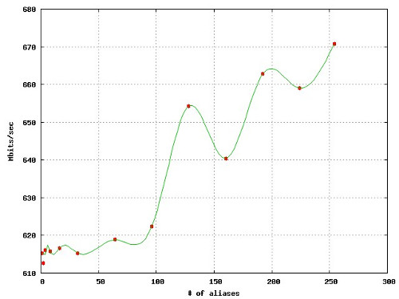

TL;DR – I put together a setup to measure the performance of IP aliasing in Linux. As the numbers at the bottom of the post describe, observed throughput increases as the number of aliases increase. WTF?
For a couple of months I have been putting together some fancy hacks using IP aliasing feature in Linux, that is, associating more than one IP address to a network interface. The limits of IP aliasing are endless…
sudo ifconfig eth0 192.168.1.1 netmask 255.255.0.0
for I in `seq 0 254`; do sudo ifconfig eth0:$I 192.168.2.$I; doneBut obviously there is a price (overhead) to pay for this at kernel level. To shed some more light into the problem at hand, for experimentation purpose, I setup a simple network as follows.

First, I setup two identical Linux boxes with gigabit ethernet cards (RTL-8169 Gigabit Ethernet [10ec:8169] rev 10) connected through a Huawei gigabit switch. (Cable is CAT6 262M of length 1 meter.) Then, I started creating iperf instances binded to particular IP aliased interfaces. That is, first iperf instance is bind to 192.168.2.1 at eth1:1, second is bind to 192.168.2.2 at eth1:2, and so on. In other words, Nth iperf instance is bind to 192.168.2.N at eth1:N.
To ease the workflow, I put together a server.sh script as follows.
#!/bin/bash
set -e
if [ $# -ne 3 ]; then
echo "Usage: $0 <NAME_TMPL> <ADDR_TMPL> <N_WORKERS>"
exit 1
fi
NAME_TMPL="$1"
ADDR_TMPL="$2"
N_WORKERS="$3"
start() {
echo "Taking network interfaces up..."
for I in `seq 1 $N_WORKERS`; do
sudo ifconfig $(printf $NAME_TMPL $I) $(printf $ADDR_TMPL $I)
done
echo "Starting iperf servers..."
for I in `seq 1 $N_WORKERS`; do
iperf --server --bind $(printf $ADDR_TMPL $I) &
done
echo "Started."
}
stop() {
echo "Taking network interfaces down..."
for I in `seq $N_WORKERS -1 1`; do
sudo ifconfig $(printf $NAME_TMPL $I) down
done
echo "Stopped."
exit 0
}
trap stop INT
start && while /bin/true; do sleep 5m; doneUsing server.sh, I’ll be able to start as many iperf instances (and necessary IP aliases for them) as I want. Next, I write client.sh as follows.
#!/bin/bash
set -e
if [ $# -ne 3 ]; then
echo "Usage: $0 <ADDR_TMPL> <N_WORKERS> <TIMEOUT>"
exit 1
fi
ADDR_TMPL="$1"
N_WORKERS="$2"
TIMEOUT="$3"
start() {
(PIDS=();
for I in `seq 1 $N_WORKERS`; do
(iperf \
--format k \
--reportexclude CMSV \
--time $TIMEOUT \
--client \
$(printf $ADDR_TMPL $I) | \
grep "Kbits/sec" | \
sed -r 's/^.* ([0-9]+) Kbits\/sec/\1/g'; \
PIDS[$I]=$!) &
done;
wait ${PIDS[@]}) | \
awk 'BEGIN{s=0} {s+=$1} END{print s}'
exit 0
}
stop() {
exit 0
}
trap stop INT
startThen the workflow becomes relatively simple.
server$ ./server.sh eth1:%d 192.168.2.%d 32
client$ ./client.sh 192.168.2.%d 32 30While going this further, nobody could stop me from writing a Gnuplot script to visualize these results.
reset
set terminal jpeg enhanced
set output "results.jpg"
set key left
set ylabel "Mbits/sec"
set xlabel "# of aliases"
set grid
plot 'results.dat' using 1:($2/1000.0) with points pointtype 7 title '', \
'' using 1:($2/1000.0) smooth csplines title ''Ok, too much talk so far. Let’s get to results. (Timeout is set to 60 seconds.)
| # of alias | 1 | 2 | 4 | 8 | 16 | 32 | 64 |
| Kbits/sec | 615,216 | 612,580 | 616,071 | 615,777 | 616,686 | 615,340 | 618,838 |
| # of alias | 96 | 128 | 160 | 192 | 224 | 254 | |
| Kbits/sec | 622,344 | 654,269 | 640,364 | 662,783 | 658,962 | 670,788 |

As the numbers suggest, Linux IP aliasing does a fairly good job that the overhead imposed by the aliases are nearly negligible. (At least I hope that is something I succeeded in measuring.) But the strange thing is, there is an improvement in the throughput as the number of network interfaces increase. What might be the explanation of this observation? Is my setup mistaken? I will be happy to hear your ideas.